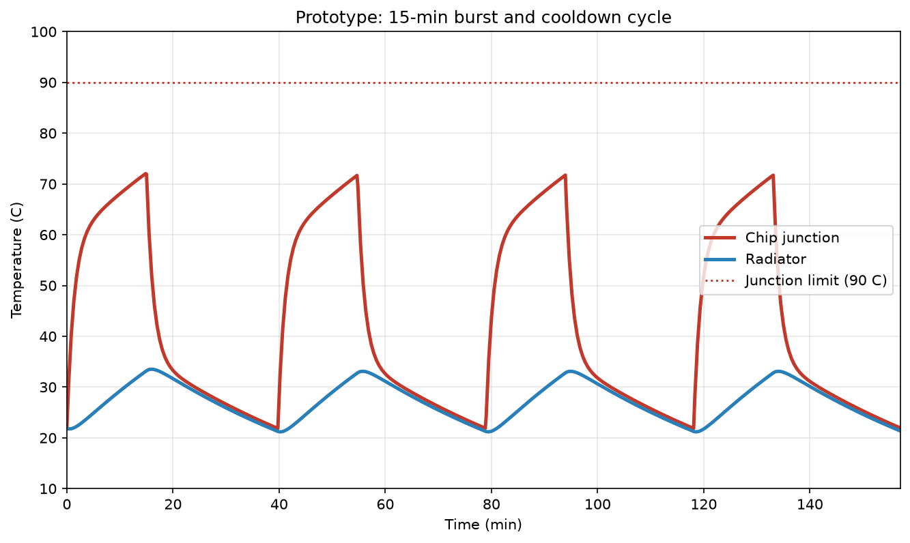
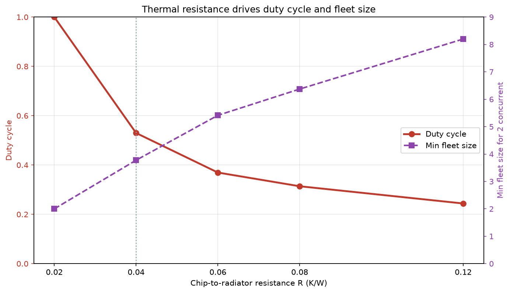
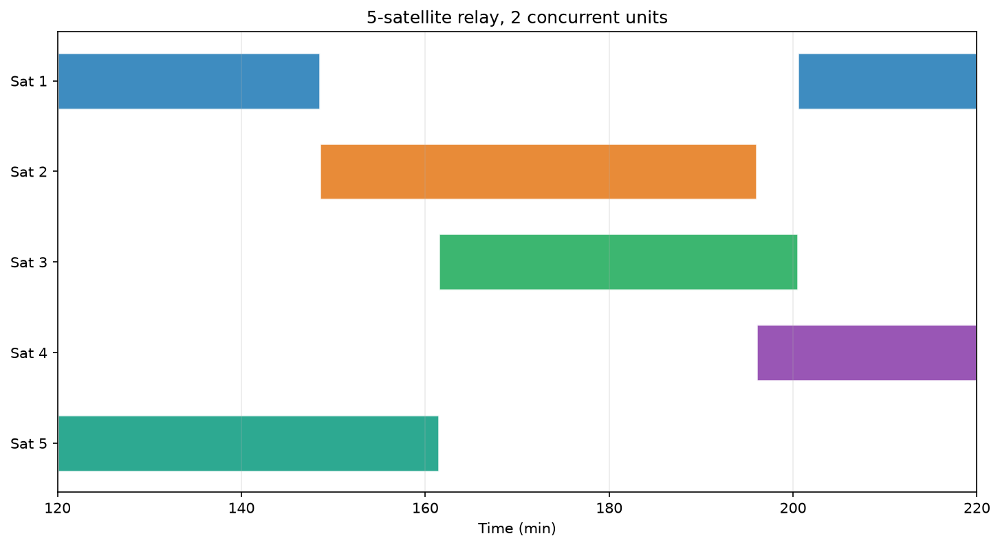
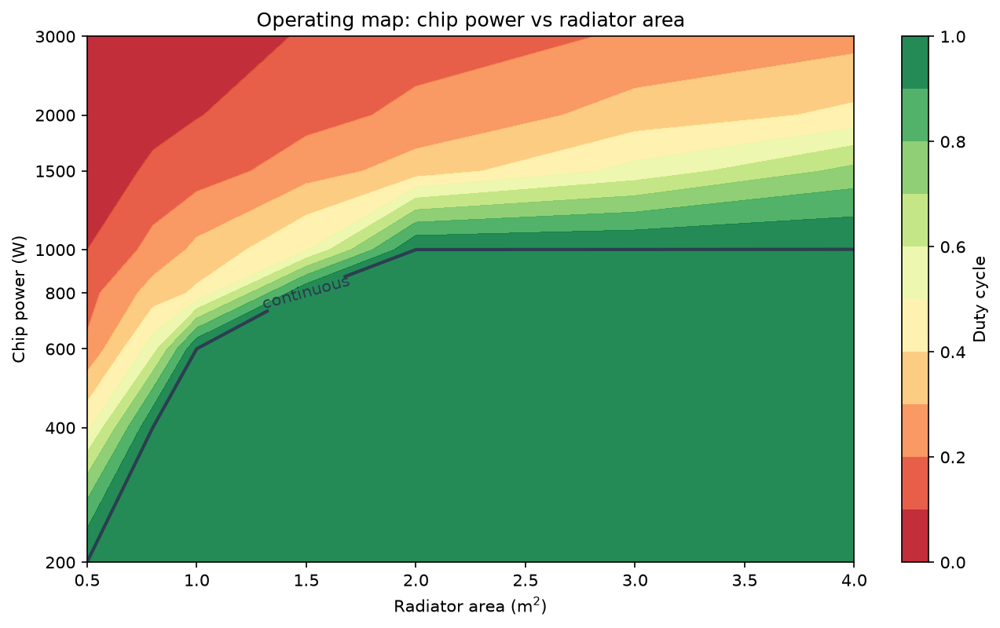
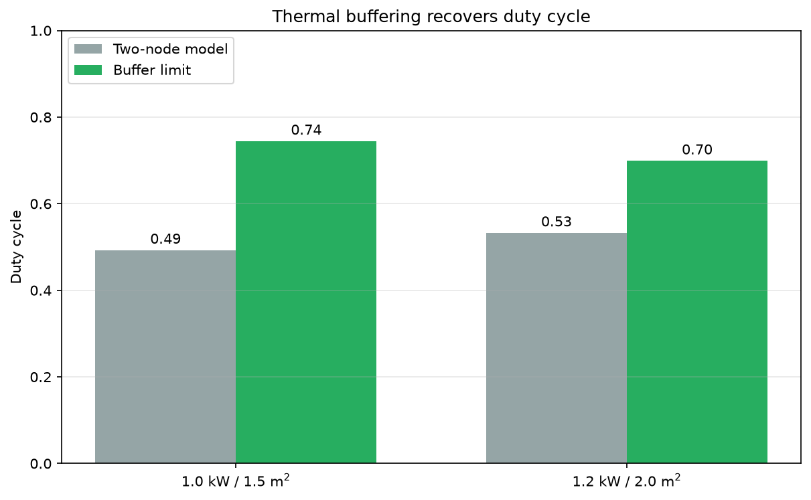

谷歌把太空数据中心送上天了：散热怎么解、算力有多少、适合什么场景
10 月 1 号，美国太空探索技术公司 SpaceX 用猎鹰九号（Falcon 9）火箭执行了 Transporter-18 任务，从美国加州的范登堡太空军基地把一批卫星送入轨道。其中一颗是商业卫星公司 Planet Labs 造的，载荷是谷歌的 TPU（张量处理单元，Tensor Processing Unit，谷歌自研的 AI 加速芯片），这是谷歌 Project Suncatcher 计划的首次入轨 [1][2][3][4][5]。群里当天也讨论起来了，一个朋友问，太空散热的问题谷歌要怎么解决；另一个朋友引了句中文转述，说真空里只能靠辐射散热，芯片连着跑十五到二十分钟就得关机冷却，"只能靠关机辐射散热了"。
我的想法跟这位朋友差不多，真空里散热是真难。但"只能靠关机"不全对，散热可以靠调度绕过去，不一定非得跟它硬碰。这篇文章要提出并验证的就是一套"轮班"办法：让设备轮流运行，任意时刻保证有一两台在跑，跑着的负责散热，停下的负责降温，互相别烤着，接成一个连续的接力。这套轮班思路是本文提出来的，论文和官方材料里都没有，群里那两句讨论只是起了个头。下面拿谷歌论文评审版给的散热口径 [6]，把它认真算一遍。
先把出处核一下，再建两节点的热模型，跑五组模拟，然后往外推：功耗和面积的通用相图、降功耗、热缓冲，以及真实推理任务的算力和数据流。最后说说那篇论文还能往哪儿改。
一、原始出处都写了啥
中文里传的说法有几处跟原文不一样，先澄清一下。
一个常见的说法是这次上了四颗，其实就一颗。Google 官方博客的原话是 "our prototype satellite for Project Suncatcher, built in partnership with Planet, launched into orbit aboard the Transporter-18 rideshare mission with SpaceX"（我们 Project Suncatcher 的原型卫星，与 Planet 合作建造，已随 SpaceX 的 Transporter-18 拼车任务入轨），单数 [1]。美国财经媒体 CNBC 同一天的报道也确认了范登堡的发射窗口和入轨后联系正常 [2]。
"15-20 分钟"这个数也不是原文。科技媒体 TechCrunch 写的是 "the satellite will fire up its TPU in 15-minute bursts to avoid straining the satellite's power and thermal management systems"（卫星会以 15 分钟一档的突发方式启动 TPU，以免压垮卫星的电源和热管理系统），15 分钟一档，怕的是电源和热管理两套系统一起吃紧 [3]。多出来的"20 分钟"是转述时加的，但方向没错，确实是间歇工作、要冷下来再跑。
"2027 年再发两颗、测星间激光组网"这句倒是对的。谷歌 2025 年 11 月 4 号在 research.google 博客上说要 "launch two prototype satellites by early 2027 ... validate the use of optical inter-satellite links for distributed ML tasks"（2027 年初发射两颗原型卫星……验证用星间激光链做分布式机器学习任务），那两颗是为算力专门造的平台 [7]，Planet Labs 公司的官宣里也提到了这个 2027 年初的时间点 [4]。
"约 1 千瓦"出自 TechCrunch 同一句 "supplying a kilowatt of continuous power"（提供一千瓦的连续功率）[3]。"太阳能是地面 8 倍"出自论文，原话 "receive up to 8x more solar energy per year than a panel located on Earth at mid-latitude"（一年接收的太阳能是地球上中纬度地区太阳能板的 8 倍）[6][8]。太阳同步晨昏轨道（沿着地球昼夜分界线飞行、几乎全程都晒得到太阳的轨道）、650 公里、81 颗卫星、半径 1 公里编队这几个数字，也都是论文里的 [6][8]。
论文后来出了同行评审版，登在能源领域期刊 Joule 上（Joule 11, 102678，2027 年 2 月 17 日刊出，在线 2026 年）[6]，预印本是预印本平台 arXiv 上的 2511.19468 [8]。评审版比预印本多了一大段散热参数，这次的模型就是冲那段去的。原文是 "A published ballpark figure for contemporary GPU/TPU power density is 90 W/cm² for Nvidia's H100, and ideally, silicon junction temperatures should be kept below 90°C, while near a satellite radiator temperature of 50°C, blackbody radiation decreases by about 1.2% per K of lower temperature..."（据公开数据，当下 GPU/TPU 的典型功率密度是英伟达 H100 的 90 W/cm²；芯片结温最好保持在 90 摄氏度以下；在辐射板温度 50 摄氏度附近，温度每低 1 K，黑体辐射能力下降约 1.2%……）。这里的芯片结温（junction temperature，芯片里晶体管工作时的温度，整颗芯片最怕过热的地方）就是这次的硬约束 [6][9]。论文说散热靠热管（一种靠工质相变、把热从一头搬到另一头的被动器件），航天上常用铝-氨或铜-水做工质，还推荐了 Silk 的《Introduction to Spacecraft Thermal Design》（《航天器热设计导论》）当入门 [6][10]。
论文自己的散热结论很干脆：热管加辐射板，被动式，全靠辐射把热丢给深空 [6][8]。Facts 页说得更直接，"In a vacuum, you can only diffuse heat via radiators, which requires a totally different approach to cooling electronics."（真空中只能靠辐射板散热，这需要一套完全不同的电子设备冷却思路）[11] 论文也把散热列进了 "significant engineering challenges remain"（仍存在重大工程挑战）那张名单，说后续任务还得继续交作业 [6][8]。
这次要算的事说清楚：拿论文给的散热口径（结温上限 90 摄氏度，芯片到板热阻 0.04 K/W）建一个两节点的热模型，回答四个问题——原型星为什么只能 15 分钟一档、1 kW 芯片连续运行要多大辐射板、芯片到板的热阻有多关键、以及本文提出的轮班接力需要几颗星。结果先摆出来：单看散热，原型星能连跑 47 分钟，15 分钟其实是电池先见底；1 kW 要连续，得配大约 2 平方米辐射板；热阻从 0.04 涨到 0.06，可用率就从 0.53 掉到 0.37；轮班方案 5 颗星能把 2 台常开覆盖到 100%，但每颗星平均只出 469 W。这些数下面逐个算。
论文这段话正好补齐了上一版模型缺的两样：一个是芯片结温这个真正的约束，另一个是芯片到板之间的温度梯度，论文原话是 "needs to be engineered to be small"（这个温差要设计得尽量小）[6]。所以这一版模型升级成两节点。
二、真空里的热为什么难散
黑体表面的辐射功率是
\(\sigma = 5.67 \times 10^{-8}\,\mathrm{W/(m^2 \cdot K^4)}\) 是斯特藩-玻尔兹曼常数，\(\varepsilon\) 是表面发射率，热控涂层一般能到 0.85-0.92 [12]，\(A\) 是辐射板面积，\(T_{sink}\) 是等效热沉温度。
太空的热沉有两块来源。一块是 3 K 的宇宙微波背景，另一块是地球，地球往外散红外（约 240 W/m²），还反射太阳光（反照率约 0.3）。650 公里的太阳同步轨道，两边合起来等效热沉温度大概落在 250-270 K，本文取 260 K，依据是 Gilmore 主编的《Spacecraft Thermal Control Handbook》（航天器热控制手册）[12]。
关键在 \(T^4\) 这个四次方。它的相对灵敏度是
50 摄氏度（323 K）处，4/323 = 1.24%/K，跟论文的"约 1.2% per K"对上了 [6]。也正因为这个四次方，空间站的辐射板敢跑到六七十摄氏度，烫一点散热能力涨很多，美国航天局 NASA 国际空间站的主动热控系统就是靠大面积板子排热的 [12]。芯片不行，结温过 90 摄氏度就出毛病 [6]。论文给的这组数（结温<90℃、辐射板~50℃）意味着一件事：1 kW 功率下，芯片到板面要压掉大约 40 K 温差，折合总热阻 0.04 K/W 上下。这 0.04 就是这次模型里的关键参数 \(R\)。
三、两节点模型
老版本把整颗星当成一个温度节点，太粗糙。这一版拆成两个：芯片结温 \(T_J\) 和辐射板温度 \(T_R\)，中间用热阻 \(R\) 连起来，这 \(R\) 是热管、安装面、界面材料加在一起的总和 [6][10]。
\(C_J\) 是芯片加封装加均热板的热容，\(C_R\) 是星体和板的热容，\(P(t)\) 是芯片功率，\(P_{bus}\) 是待机总线功耗，\(A_{eff} = 2 A_{rad} \times 0.85\)。约束从"辐射板温度"换成了"芯片结温"：\(T_J \le 90\,^\circ\mathrm{C}\) [6]。
稳态下有 \(T_J = T_R + P R\)。代进约束，辐射板实际能到的温度上限就是 \(T_{R,max} = 90\,^\circ\mathrm{C} - P R\)。这一步是关键：结温是硬上限，热阻越大，留给辐射板的额度越小。要是 \(P R\) 大到逼近"90 摄氏度减热沉温度"那个差，板子再大也没用，芯片自己先过热了。
参数表：
| 参数 | 取值 | 出处 |
|---|---|---|
| 芯片结温上限 | 90 ℃（363 K） | Joule 评审版 [6] |
| 芯片到板总热阻 R | 0.04 K/W | 由 40 K @ 1 kW 反推 [6] |
| GPU/TPU 热流密度 | 90 W/cm²（H100） | 评审版引 NVIDIA Hopper [6][9] |
| 太阳能（LEO 低地球轨道晨昏轨） | 地面中纬度的约 8 倍 | 论文 [6][8] |
| 原型星功率 | 1 kW | TechCrunch [3] |
| 原型星辐射板 A_rad | 1.5 m² | 本文假设 |
| 芯片节点热容 C_J | 2×10³ J/K | 本文假设 |
| 星体热容 C_R | 4×10⁴（单机）/6×10⁴（集群节点）J/K | 本文假设 |
| 辐射面发射率 ε | 0.9 | 热控涂层典型值 [12] |
| 等效热沉温度 | 260 K | 综合地球红外与反照 [12] |
| 待机总线功耗 | 80 W | 本文假设 |
| 15 分钟突发档位 | 电池容量限制 | TechCrunch [3] |
谷歌没公开原型星的板面积、热容和热阻，这几个是按量级推的。模型的价值不在复刻原型，而在把参数机制摊开，看改哪个会翻盘。
四、15 分钟一档，到底是不是热卡住的
原型星平时是这样工作的：从 22 摄氏度（295 K）起跑，满负荷 1 kW，15 分钟后电池见底强制停机，这时候芯片结温 72.2 摄氏度，辐射板才 33.2 摄氏度。然后待机 80 W 慢慢散，24.8 分钟后结温回到 22 摄氏度，进入下一轮。一个周期 39.8 分钟，占空比 38%。
算出来一个反直觉的数：热学能撑的热重启窗口是 47.4 分钟，比 15 分钟长得多。也就是说光看散热，这颗星还能多跑半个多小时，15 分钟一档的真正瓶颈是电池和电源，不是热。TechCrunch 原话把 "power and thermal management"（电源和热管理）两个都点了 [3]，模型正好把两条约束拆开：热学给 47 分钟，电池给 15 分钟。原型星的结温峰值离 90 摄氏度还差 18 K，散热在原型阶段绰绰有余。
要是电池不管硬跑，稳态下辐射板爬到 64 摄氏度、结温爬到 104 摄氏度，越过红线。所以"原型星连续跑不了满负荷"这话还成立，只是卡点从板温换成了结温。

图里是原型星四个连续周期的温度曲线，红的是芯片结温，蓝的是辐射板温度。几个点值得看：结温峰值 72 摄氏度，离 90 摄氏度还差 18 K，15 分钟一档不是热卡的；辐射板这时候才 33 摄氏度，一半的散热本事都没使出来；待机那 25 分钟里结温掉得比板温快，因为芯片节点热容小，温度基本跟着板走。
五、辐射板加到多大才够
15 分钟一档既然是电池卡的，那板子要多大才能撑住连续满负荷？把面积从 1.2 试到 3.0 平方米，看连续运行时的结温和板温：
| A_rad (m²) | 连续运行结温 | 连续运行板温 | 结论 |
|---|---|---|---|
| 1.2 | 116 ℃ | 77 ℃ | 结温超限 |
| 1.5 | 104 ℃ | 64 ℃ | 结温超限 |
| 1.8 | 94 ℃ | 54 ℃ | 单机最长 101 分钟 |
| 2.0 | 89 ℃ | 49 ℃ | 刚够连续 |
| 2.4 | 81 ℃ | 41 ℃ | 连续有余量 |
| 3.0 | 72 ℃ | 32 ℃ | 连续很宽松 |
按评审版结温<90 摄氏度的口径 [6]，每 kW 算力大概要 2.0 平方米板才能连续。原型星实际多大谷歌没说，但它在 15 分钟档上跑、结温还剩 18 K 余量，板面积估计在 1.5-2 平方米之间。
六、热管才是那个隐藏的坎
论文那句 "temperature differential ... needs to be engineered to be small"（芯片到板的温差要设计得尽量小）[6]，翻成模型的话就是热阻 \(R\) 必须小。把 \(R\) 从 0.02 试到 0.12 K/W，看单机占空比和需要的节点个数（周期稳态，跑 50 个周期取后 30 个平均）：
| R (K/W) | 运行时长 | 停机时长 | 占空比 η | 保 2 台常开需 N≥ | 辐射板温度区间 |
|---|---|---|---|---|---|
| 0.02 | 连续 | — | 1.00 | 2.0 | 22-58 ℃ |
| 0.04（论文口径） | 43 min | 38 min | 0.53 | 3.8 | 21-42 ℃ |
| 0.06 | 6 min | 10 min | 0.37 | 5.4 | 21-23 ℃ |
| 0.08 | 4 min | 8 min | 0.31 | 6.4 | 18-18 ℃ |
| 0.12 | 3 min | 9 min | 0.24 | 8.2 | 13-13 ℃ |
热阻从 0.02 涨到 0.06，占空比从连续一路掉到 0.37，中间 0.04 是 0.53。道理不复杂：\(R\) 一大，结温很快顶到 90 摄氏度，辐射板还没热起来就被迫停机。\(R=0.12\) 时板子基本停在 13 摄氏度，一块本来能排几百瓦的板，实际只排几十瓦。热管做不好，散热板再大也白搭。

图里横轴是热阻，红线（左轴）是单机占空比，紫线（右轴）是保两台常开的最小节点个数。\(R=0.02\) 时结温稳态就在 90 摄氏度以下，能连续跑，两台够；\(R=0.04\) 掉到 0.53，要四台；\(R=0.12\) 要八台以上。这就是"梯度必须做小"的量化意思。
再往下推，\(R\) 还给单芯片功率封了顶。结温上限 90 摄氏度、热沉 260 K，差 103 K，每瓦功率吃掉 \(R\) 那么多温差：
\(R=0.04\) 是 2.6 kW，\(R=0.08\) 只剩 1.3 kW。过了这个数，板子再大也没用，芯片自己烧穿。所以太空算力的单芯片功率不是被板子卡住的，是被芯片到板那段热阻卡住的。
七、轮班接力到底要多少颗星
我们还可以设计一种轮班方案：设备轮流运行，停下来的负责散热。把它写成调度规则：每颗星 1.2 kW、2 平方米板、\(R=0.04\)，结温到 90 摄氏度强制停机，回到 22 摄氏度才能再次开机；最多两台同时跑；优先选累计运行时间短的。编队里其他星的板会互相照面，用一个邻居互烤系数 \(f=0.15\) 表示。跑 48 小时，前 24 小时当过渡期扔掉：
| 节点数 N | 至少 1 个节点在跑 | 平均并发 | 每台平均运行 (h/24h) | 等效满负荷 |
|---|---|---|---|---|
| 1 | 47% | 0.47 | 11.3 | 0.57 kW |
| 2 | 48% | 0.95 | 11.4 | 1.14 kW |
| 3 | 89% | 1.33 | 10.6 | 1.60 kW |
| 4 | 88% | 1.77 | 10.6 | 2.12 kW |
| 5 | 100% | 1.95 | 9.4 | 2.35 kW |
| 10 | 100% | 2.00 | 4.8 | 2.40 kW |
| 25 | 100% | 2.00 | 1.9 | 2.40 kW |
N=1 和 N=2 的覆盖率都卡在 47% 左右，是锁步共振：两个节点一起运行、一起升温、一起停机，错不开。单机占空比 0.53，双星轮换也只有一半出头。节点数至少要有并发上限的两倍才错得开，N=5 覆盖率到 100%，每颗星平均一天运行 9.4 小时。

图里是 5 颗星同一时间段的排班，一行一颗，有颜色的条就是它在跑。任意时刻大概两条重叠，这就是接力：某个节点结温顶到 90 度停机，另一个正好凉透顶上来。每个节点运行四十来分钟、停机四十来分钟，5 个错峰，凑出差不多两台的连续算力。
邻居互烤也有敏感度：\(f=0.15\) 没事，加到 0.3 等效负荷掉约 14%，到 0.6 覆盖率掉到 74%。论文自己提过 "would have to pay attention to occlusion of outgoing 'rejected heat' IR radiation between satellites"（得留意卫星之间排出的废热红外辐射互相遮挡的问题）[6]，注意到了，但还没交作业。
八、汇总
| 项目 | 数值 | 说明 |
|---|---|---|
| 原型星（本次发射） | ||
| 15 分钟突发后结温 | 72 ℃ | 离 90 ℃ 上限还有 18 K |
| 热学允许的热重启窗口 | 47 min | 远大于电池给的 15 min |
| 实际 15 分钟档位 | 电池限制 | 占空比 38% |
| 连续满负荷结温 | 104 ℃ | 超限，必须间歇 |
| 辐射板需求（1 kW） | ||
| 连续运行所需面积 | 约 2.0 m²/kW | 结温<90 ℃ |
| 热阻敏感性（1.2 kW，2 m²） | ||
| R=0.02 / 0.04 / 0.06 / 0.08 K/W | η=1.00 / 0.53 / 0.37 / 0.31 | 断崖在 0.04-0.06 之间 |
| 单芯片功率天花板 | 2.6 kW（R=0.04） | 板再大也越不过 |
| 节点轮班（1.2 kW，2 m²，R=0.04） | ||
| 最小节点个数 | N≥m/η≈3.8 | N=5 实现全天 2 台常开 |
| 每颗星平均输出 | 469 W | 冗余比约 2.5 倍 |
| 100 MW（兆瓦）等效算力 | 约 213,000 颗星 | 每颗 469 W |
| 对应入轨质量 / 发射费 | 约 1.49 万吨 / 约 30 亿美元 | 按 $200/kg、5 年摊销 5,970 $/kW/y |
| 地面电费参照 | 570-3,000 $/kW/y | 论文给的区间 [6] |
| 通用场景与降功耗 | ||
| 连续运行的单芯片功率上限 | 363 / 646 / 1010 / 1409 W | 对应板面积 0.5 / 1.0 / 2.0 / 4.0 m² |
| 推荐低功耗点 | 400 W + 1.0 m² 板 | 结温 60 ℃，可连续，无需轮班 |
| 热缓冲 | ||
| 1.0 kW / 1.5 m² | η 0.49 → 0.74 | 可回收 0.25 可用率 |
| 1.2 kW / 2.0 m² | η 0.53 → 0.70 | 可回收 0.17 可用率 |
| 真实任务（70B 推理，量级） | ||
| 4-bit 权重 | 35 GB/模型 | 每颗参与推理的星存一份或一份分片 |
| 单芯片吞吐 | 约 28 tokens/s（满速）/ 约 15（轮班 0.53） | HBM 1 TB/s、带宽受限 |
| 权重上行 | 约 1.4 s/星 | TBIRD 200 Gbps [13] |
| 星间分发 | <0.1 s | 单口径 9.6 Tbps [6][8] |
九、通用场景，和怎么把功耗降下来
前面都是按 1 kW 单芯片、2 平方米板这一套算的。换个功率、换个板面积会怎样？把单芯片功率从 200 W 试到 3000 W，板面积从 0.5 试到 4 平方米，画出占空比相图：

绿色是能连续跑的，红黄是必须轮班的。几个数直接读：单芯片 200 W，什么板都能连续，根本不用轮班；400 W，板子 0.8 平方米以上就连续；1 kW，要 2.0 平方米才算连续，这就是原型星上不去的原因；3 kW，板子再大都到不了连续，占空比最高 0.26。
连续运行的单芯片功率上限（板面积固定）大致是：0.5 平方米 363 W，1.0 平方米 646 W，2.0 平方米 1010 W，4.0 平方米 1409 W。加面积越来越不划算，因为 \(T^4\) 那项：板子越大温度越低，单位面积能排的热掉得越快。
所以"降功耗"这条路是通的。把单芯片从 1 kW 压到 400 W 左右、配 1 平方米板，结温才 60 摄氏度，直接连续跑，根本不需要轮班。轮班这套调度本来就是给"高功耗密度挤进小散热板"打的补丁，回到低功耗连续运行，补丁就不需要了。
十、还有个方案：热缓冲
不想降功率的话，还有条路叫热缓冲：在芯片和板之间加一层相变材料（Phase Change Material，PCM，一种受热熔化时能把大量热量吸进去、自身温度却几乎不升的材料）。有它兜着，板子能更久地待在允许的最高温度附近，把散热能力用足。
这条路的理论上限也能算：假设缓冲够大，板子一直稳在 \(T_{R,max} = 90\,^\circ\mathrm{C} - P R\) 不上下晃，占空比就是 \(η_{ideal} = [k(T_{R,max}^4 - T_{sink}^4) - P_{bus}] / P\)。拿它跟当前模型的实际占空比比，差的就是热缓冲能捞回来的可用率：

1.0 kW / 1.5 m² 这组，实际 0.49，上限 0.74，能捞回 0.25；1.2 kW / 2.0 m² 这组，实际 0.53，上限 0.70，能捞回 0.17。
换句话说，加了合适的热缓冲，同样硬件，可用率能提 0.17-0.25，等于所需节点个数砍掉两三成。代价是相变材料的重量：一次运行窗口要吸掉 \(P \times t_{on}\) 的热，1 kW 跑 40 分钟就是约 2.4 MJ，按石蜡类相变焙 200 kJ/kg 算，得配十几公斤。所以这是拿重量换可用率，跟"加大板子""加卫星冗余"是同一杆秤上的三个砝码，哪个划算要看发射成本和质量预算。
十一、真实任务怎么跑：算力、传递、存储、共享
前面都在算热，这节把热接回真实任务。在一颗星上跑一个 70B 级大模型推理，绕不开四件事。
先说算力。推理是带宽受限的：生成一个 token 要把权重整个读一遍，所以单芯片速度大概是 tokens/s ≈ HBM带宽 / 权重字节数。70B 模型 4-bit 量化后权重约 35 GB，配 1 TB/s 的 HBM，满速约 28 tokens/s。套上轮班的 0.53 占空比，实际只剩约 15 tokens/s；走低功耗连续（400 W）就能拿回满速。这是降功耗的第二个好处，不光不用轮班，吞吐还更高。
传递这块，地面训好的权重得先传上去。美国航天局 NASA 的 TBIRD（TeraByte InfraRed Delivery，太字节红外传输，星地激光通信实验）演示过 200 Gbps 的星地激光通信 [13]，35 GB 传一颗星约 1.4 秒；要在整个编队分发，靠论文说的星间链路（单口径 9.6 Tbps [6][8]），一派发不到 0.1 秒。上行慢、横向快，所以合理的做法是地面先传给少数几颗，再靠星间链路铺开。
存储麻烦的不是容量，是辐射。每颗参与推理的星都得存一份权重（数据并行），或者存一部分（流水线/张量并行），35 GB 的 4-bit 权重本身不大。论文辐照测试里，HBM 累积 2 krad(Si)（千拉德，辐射剂量的单位，Si 指硅）后才出异常，五年任务剂量约 750 rad(Si)，没到硬失效 [6][8]；软错误率约每 17 rad 一次，折算大概三百万次推理错一次 [6][8]。这个量级推理能接受，但要配 ECC（纠错码，Error Correcting Code，能自动发现并纠正存储里的位翻转）加定期校验重载 [6]。权重不能当静态文件丢在 NAND（一种闪存）里，得有后台巡检把被打翻的位纠回来。
最后是共享。单颗星跑不动大模型，就把模型切开：流水线并行把不同层分到不同星上，激活值靠星间链路在层间传，论文那个近距离编队（最近邻 100-200 米 [6][8]）就是为了让这种高带宽低时延的链路成立。但这里有个跟散热直接冲突的地方：流水线并行要求参与的星长期同时在线，而轮班的本质是"同一刻只有少数几颗在跑"。所以轮班跟大模型并行训练/推理是冲突的，轮班天生适合异步、松耦合的活（各干各的推理），不适合几千颗芯片同步跑几个月的训练。论文辐照测试自己也认了，训练场景 "requires further study"（还需要进一步研究）[6]。太空算力先从推理做起，这个判断在热模型和任务模型里是一致的。
十二、可能要做改进的方向
散热和功耗这块，论文把边界交代得很清楚，结温压到 90 摄氏度以下、板子大约 50 摄氏度、H100 级热流密度 90 W/cm² [6][9]，但停在了参数上，没给出一个能算占空比、轮班规模、节点个数的模型。补上两节点模型之后才看清，真正卡脖子的是芯片到板那段热阻，它既给单芯片功率封了顶，又直接决定可用率。通用场景论文也没铺，它默认的是热管加辐射板的稳态散热一种思路，没回答"换个功率、换个板面积会怎样"。相图那节补了这块，结论是单芯片压到几百瓦、小面积板就能连续，比硬扛高功耗省事得多，这条路论文没展开。
算力、数据存储、训练还是推理，这一组论文也没串起来。它讲了星间带宽、辐照、发射成本 [6][8]，但没回答一个 70B 推理在轨上怎么跑、权重怎么传上去、怎么存、怎么在编队里共享，这次补了量级估算。更要紧的是训练和推理的岔路：论文辐照测试自己承认软错误对大规模训练的影响还需进一步研究 [6]，把训练往后放了，这跟本文热模型和任务模型的结论一致，轮班适合异步松耦合的推理，跟几千颗芯片同步跑几个月的训练是矛盾的。太空算力先做推理，不是保守，是物理和调度一起定的。
环境和寿命、还有实测数据，是论文留白最多的部分。评审版新增了生命周期评估、火箭再入、卫星残骸的段落，但明说完整的生命周期评估（Life Cycle Assessment，LCA）不在本文范围内 [6][14]，把环境账留给了以后；辐照和材料退化也只给了剂量和软错误率，没算五年寿命末期发射率和电池还剩多少余量。最后这些结论都还没有在轨数据背书，这次原型星刚上天 [1][2]，热设计、辐照、编队控制都要等真飞数据来校，论文的散热参数是从地面真空罐和辐照台架推的 [6][11]，在轨会不会打折，只能等。
十三、作为一道数学建模例题
把它当一道例题收一下。已知功率 P、辐射板面积 A、发射率 ε、热沉温度 T_sink、结温上限 T_J_max、芯片到板热阻 R、两节点热容；求单机连续运行所需面积、占空比、单芯片功率上限、轮班实现 m 台常开所需的最小节点个数、热缓冲可回收的可用率、通用场景相图。
解法走四步。第一步建模型，两节点热网络，\(C_J\,dT_J/dt = P - (T_J-T_R)/R\)，\(C_R\,dT_R/dt = (T_J-T_R)/R + P_{bus} - k(T_R^4 - T_{sink}^4)\)，\(k = 2\varepsilon\sigma A F\)，约束 \(T_J \le 90\,^\circ\mathrm{C}\)。
第二步用准稳态把约束从结温换到板温，\(T_J = T_R + PR\)，得 \(T_{R,max} = 90\,^\circ\mathrm{C} - PR\)，由此得到三个闭式：连续运行所需面积、单芯片功率天花板 \(P_{max} = (90\,^\circ\mathrm{C} - T_{sink})/R\)、热缓冲上限 \(η_{ideal}\)。
第三步数值积分并做互验：辐射板方程做精确积分再加结温充电时间，跟 RK 自适应格式对照，偏差 6.3%。
第四步离散事件仿真：把调度规则（\(m=2\)、公平轮换、返回温度线、邻居互烤）写进循环，每步 5 秒，统计最后 24 小时。锁步共振（N=2 覆盖 47%）和 N=5 接力闭环，都是调度规则直接推出来的。
局限也明摆着，都是我自己的简化：芯片到板就一个集中热阻，真实是芯片内部温度分布加分段热管；姿态只取一个系数，真实卫星迎阳受晒、背阳辐射，温度随轨道周期性起伏；编队互烤用均值场，真实近邻遮挡是几何问题；发射率和太阳能电池效率设成常数，没算涂层退化、原子氧、微流星体这些寿命问题。模型给的是量级和机制，不是设计图纸。
参考文献
- Beals, T. "Our Project Suncatcher prototype satellite is in orbit." Google Blog, 2026-10-01. https://blog.google/innovation-and-ai/models-and-research/google-research/project-suncatcher-prototype/
- Kolodny, L. "SpaceX launches Google AI chips into orbit in push toward space-based data centers." CNBC, 2026-10-01. https://www.cnbc.com/2026/10/01/spacex-to-launch-google-ai-chips-to-orbit-with-planet-labs-satellites.html
- Fernholz, T. "Google thinks SpaceX's Starship has to launch 1,800 times before space data centers get off the ground." TechCrunch, 2026-10-01. https://techcrunch.com/2026/10/01/google-thinks-spacexs-starship-has-to-launch-1600-times-before-space-data-centers-get-off-the-ground/
- Schingler, R. "Planet to Build and Operate Advanced Space Platform for Google's Project Suncatcher Moonshot." Planet Pulse, 2025-11-04. https://www.planet.com/pulse/planet-to-build-and-operate-advanced-space-platform-for-google-s-project-suncatcher-moonshot/
- Foust, J. "SpaceX launches Transporter-18 rideshare mission." SpaceNews, 2026-10-01. https://spacenews.com/spacex-launches-transporter-18-rideshare-mission/
- Agüera y Arcas, B., Beals, T., Biggs, M., Bloom, J. V., Fischbacher, T., Gromov, K., Köster, U., Pravahan, R., Manyika, J. "Toward a future space-based, highly scalable AI infrastructure system design." Joule 11, 102678 (2027-02-17). DOI: 10.1016/j.joule.2026.102678. https://doi.org/10.1016/j.joule.2026.102678
- Beals, T. "Exploring a space-based, scalable AI infrastructure system design." Google Research Blog, 2025-11-04. https://research.google/blog/exploring-a-space-based-scalable-ai-infrastructure-system-design/
- 同文预印本：arXiv:2511.19468 (v2, 2026-06-17). https://arxiv.org/abs/2511.19468
- Palmer, G., Krashinsky, R., Stam, N., Mehta, V., Brito, G., Ramaswamy, S. "NVIDIA Hopper Architecture In-Depth." NVIDIA Technical Blog, 2022.（评审版引用的 H100 热流密度 90 W/cm² 出处）
- Silk, E. A. Introduction to Spacecraft Thermal Design. Cambridge University Press, 2020.（论文评审版推荐的航天热设计入门；热管、辐射器、界面热阻）
- Beals, T. "Behind Project Suncatcher, our moonshot to put AI in space." Google Blog, 2026-09-24. https://blog.google/innovation-and-ai/models-and-research/google-research/google-project-suncatcher-facts/
- Gilmore, D. G. (ed.) Spacecraft Thermal Control Handbook, Volume I: Fundamental Technologies. AIAA, 2002.（辐射换热、等效热沉温度取值；ISS EATCS 辐射器）
- Riesing, K. et al. "Operations and results from the 200 Gbps TBIRD laser communication mission." NASA NTRS, 2023.（论文提到的星地光通信演示）
- Barker, C. R., Marais, E. A., McDowell, J. C. "Global 3D rocket launch and re-entry air pollutant and CO2 emissions at the onset of the megaconstellation era." Sci. Data 11, 1079 (2024).（评审版新增的发射/再入环境影响）